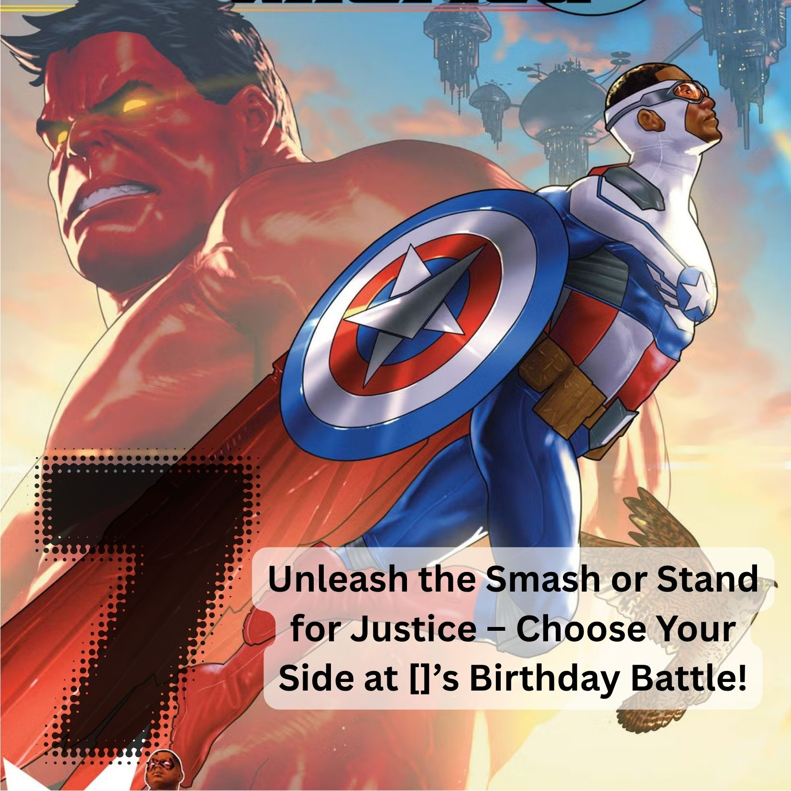

For this project, I developed a comprehensive set of real estate marketing materials
designed to enhance brand visibility and generate client engagement. The deliverables
included professional business cards, eye-catching social media ads, and direct door
flyers strategically targeted to local neighborhoods. Each piece was crafted with consistent
branding, clean design, and clear messaging to highlight the agent’s unique services and build
trust with potential clients. The combination of print and digital assets ensured broad reach
and allowed the agent to connect with both traditional and tech-savvy audiences.
Reflecting on this project, I appreciated the opportunity to blend creativity with strategy.
Designing the materials required not only an eye for aesthetics but also an understanding of
the real estate market and the behaviors of prospective buyers and sellers. I learned how
important it is for marketing materials to be both visually appealing and purposeful,
communicating value in a concise way. This project reinforced my skills in balancing design
with functionality, and it gave me deeper insight into how thoughtful marketing can directly
support client acquisition and business growth.
Cards

For this project, I created a superhero-themed digital birthday card designed
for online sale. The card featured bold, vibrant graphics, comic-style fonts,
and playful wording to capture the excitement and energy associated with superheroes.
My goal was to create something that would appeal to both children and adults, offering
a fun and lighthearted way to celebrate a special day. By formatting the card as a digital
download, I was able to provide customers with a convenient, eco-friendly option that could
be instantly accessed, printed at home, or shared electronically.
Reflecting on this project, I found it especially rewarding to merge creativity with practical
design considerations. Balancing color, typography, and imagery required careful attention to
ensure the card was engaging without being overwhelming. I also gained insight into how digital
products need to be optimized not just for visual appeal, but also for usability and marketability
in an online setting. This experience reinforced my interest in digital design as both an artistic
outlet and a strategic tool for reaching broader audiences.
Badges
For this project, I designed a professional badge to recognize “Evolving and Emerging Leadership”
within the company. The badge was awarded to participants who had successfully completed the
organization’s leadership development program, serving as both a symbol of accomplishment and a
motivator for continued growth. My design balanced professionalism with inspiration, incorporating
branding elements from the company to ensure consistency while also highlighting the unique prestige
of the recognition. The badge was used across both digital platforms and physical materials, giving
leaders a tangible reminder of their achievement and reinforcing the company’s culture of growth and
excellence.
Reflecting on this project, I found it especially meaningful because it tied directly to employee
development and recognition—two areas I am deeply passionate about. Creating the badge required me
to think beyond design and consider how visual representation can reinforce organizational values and
inspire individuals. It also underscored the importance of aligning recognition tools with company
culture to strengthen engagement. This project highlighted how even a small design element can have a
lasting impact on motivation, leadership identity, and organizational pride.
.jpg)
.jpg)